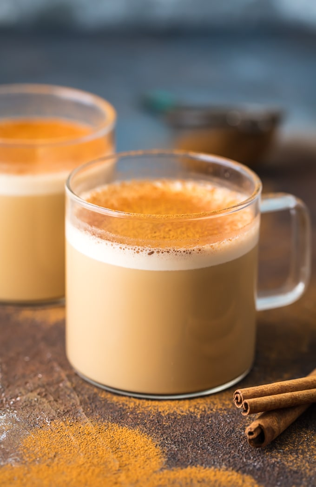
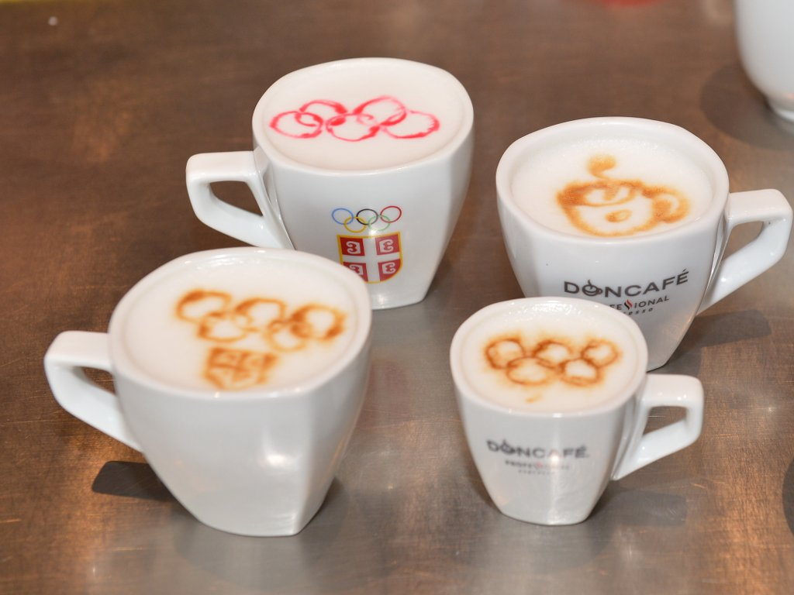
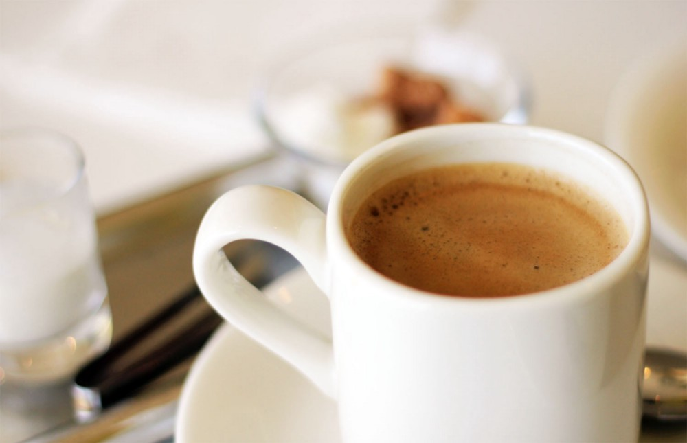

Coffee...

Futuristic keto coffee:
Small video about Serbian coffee...
it is like local version of Turkish way of coffee (Actually it is main relax-chat-morning-aftermeal drink in whole
ex-Yugoslavia, like it is tea in some other countries, and here is this particular version mostly popular)
and it is commonly called Turkish coffee here or Domestic coffee, uncompromiting name.
Well I'm not tourist guide or gastronomy expert, just consumer trying to write something for homework
Coffee text, this is not me
Olympic circles decoration on coffee ;) 
That is it. I don't know how to make big second div.
Two more pages and enough! So this is page zero. Links are in different colours?
srk srk (on Serbian... sound of slurping) 